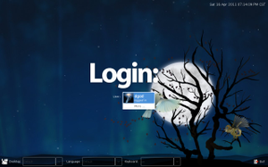

LXDM
Dieser Artikel wurde für die folgenden Ubuntu-Versionen getestet:
Ubuntu 14.04 Trusty Tahr
Zum Verständnis dieses Artikels sind folgende Seiten hilfreich:
 LXDM
LXDM  dient als Displaymanager der Desktop-Umgebung LXDE zur grafischen Anmeldung. Es wurde als Ersatz für GDM konzipiert, erreicht aber nicht den Funktionsumfang desselben. Dafür ist es wesentlich sparsamer im Umgang mit Systemressourcen als sein Vorbild.
dient als Displaymanager der Desktop-Umgebung LXDE zur grafischen Anmeldung. Es wurde als Ersatz für GDM konzipiert, erreicht aber nicht den Funktionsumfang desselben. Dafür ist es wesentlich sparsamer im Umgang mit Systemressourcen als sein Vorbild.
Derzeit verwendet keine offizielle Ubuntu-Variante LXDM als Standard. Eingesetzt wurde es bei Lubuntu bis Version 11.10, aber dannn zugunsten von LightDM aufgegeben. Zum Einsatz kam es beispielsweise noch bei der Distribution Bodhi Linux.

Installation¶
LXDM kann direkt aus den offiziellen Paketquellen installiert werden [1]:
lxdm (universe)
 mit apturl
mit apturl
Paketliste zum Kopieren:
sudo apt-get install lxdm
sudo aptitude install lxdm
Konfiguration¶
 Bei Ubuntu-Varianten mit einem Anwendungsmenü steht über "System -> LXDM Config" ein kleines englischsprachiges grafisches Konfigurationsprogramm zur Verfügung. Alternativ kann man es mit lxdm-config aufrufen. Die Dateien zu den Einstellungen von LXDM befinden sich im Ordner
Bei Ubuntu-Varianten mit einem Anwendungsmenü steht über "System -> LXDM Config" ein kleines englischsprachiges grafisches Konfigurationsprogramm zur Verfügung. Alternativ kann man es mit lxdm-config aufrufen. Die Dateien zu den Einstellungen von LXDM befinden sich im Ordner
/etc/lxdm/ (LXDE)
/etc/xdg/lubuntu/lxdm/ (Lubuntu)
Von zentraler Bedeutung ist die Datei lxdm.conf. Diese kann mit einem Editor [2] und Root-Rechten bearbeitet werden. Als Beispiel soll die Konfiguration von Lubuntu 11.04 dienen:
[base] #autologin=BENUTZERNAME #session=/usr/bin/startlubuntu # numlock=0 greeter=/usr/lib/lxdm/lxdm-greeter-gtk [server] # arg=/usr/bin/X -nr vt1 [display] gtk_theme=Clearlooks bg=/usr/share/backgrounds/default.png bottom_pane=1 lang=1 theme=Industrial [input] [userlist] disable=1 white= black=
Anmerkung:
0= deaktiviert1= aktiviert
Automatische Anmeldung¶
Achtung!
Wer ein verschlüsseltes Homeverzeichnis verwendet, sollte auf eine automatische Anmeldung verzichten, weil dadurch der Aspekt der Daten-Sicherheit unterlaufen und die Funktionsweise erheblich beeinträchtigt wird.
Um eine automatische Anmeldung (Autologin) auf einem Computer mit nur einem einzigen Benutzer zu ermöglichen, entfernt man die Kommentarzeichen # im folgenden Abschnitt:
[base] autologin=BENUTZERNAME session=/usr/bin/startlubuntu # numlock=0
und passt BENUTZERNAME entsprechend an. Falls der Zahlenblock automatisch aktiviert werden soll, kann auch die Zeile mit numlock=0 auskommentiert werden. Dies ist aber nur bei Verwendung einer externen Tastatur praktisch (und auf Notebooks eher kontraproduktiv).
Benutzerliste¶
Hinweis:
Die Benutzerliste ist erst ab Version 0.3.0 vorhanden. Außerdem muss das verwendete Thema eine Benutzerliste unterstützen.
Auf Systemen mit mehreren Benutzern kann es nützlich sein, eine Liste der Benutzer anzuzeigen. Dazu dient der Eintrag:
[userlist] disable=0
Man sollte aber bedenken, dass jetzt nur noch ein Kennwort den Rechner vor einem unbefugten Zugriff schützt. Daher wird die Anzeige der Benutzerliste bei manchen Rechnern bewusst unterdrückt. Auf Wunsch kann über eine White- bzw. Blacklist angegeben werden, welche Benutzer konkret angezeigt werden sollen und welche nicht (in der Praxis ist vermutlich der Eintrag black=BENUTZERNAME der wichtigere).
white= black=
Experten-Info:
Die Version 0.3 liest die Datei /etc/passwd und prüft auf Benutzer, die /home/ als Verzeichnis haben. Dann werden einfach nur die ersten drei gefundenen in die Benutzerliste übernommen. Auch die Reihenfolge der Benutzernamen innerhalb der Password-Datei scheint eine Rolle zu spielen.
Weitere Optionen¶
Design (siehe GTK Engines):
gtk_theme=ClearlooksHintergrundbild:
bg=/usr/share/backgrounds/default.pngAnzeige der Werkzeugleiste am unteren Bildschirmrand aktivieren:
bottom_pane=1Sprachauswahl aktivieren:
lang=1
Themen¶
Das Aussehen von LXDM lässt sich über Themen beeinflussen. Diese sind unterhalb von /usr/share/lxdm/themes/ gespeichert. Bisher existiert erst ein Thema namens "Industrial". Dieses kann als Beispiel für eigene Kreationen genutzt werden. Während sich das Hintergrundbild in der Datei ldxm.conf über
[display] bg=/usr/share/backgrounds/default.png
leicht ändern lässt (neues Bild zuerst mit Root-Rechten nach /usr/share/backgrounds/ kopieren), erfordern Anpassungen in der zentralen Datei /usr/share/lxdm/themes/Industrial/greeter.ui XML-Kenntnisse.
Bedienung¶
Die Bedienung eines Displaymanagers erfolgt immer nach dem gleichen Schema. Zuerst gibt man den Benutzernamen ein (oder wählt ihn aus der Benutzerliste aus), bestätigt mit ⏎ und wiederholt den Vorgang für das Kennwort. Nach einem zweiten ⏎ wird die zuletzt benutzte Sitzung gestartet - wenn die Angaben korrekt waren (dieser Vorgang darf beliebig oft wiederholt werden).
Möchte man die Sitzung (die gewünschte Desktop-Umgebung) oder die Sprache der Sitzung ändern, sollte man dies vor der Anmeldung tun. Zusätzlich wird die Möglichkeit geboten, den Rechner auszuschalten oder neu zu starten.
Beenden und (Neu-)Starten samt XServer¶
Manchmal kommt es vor, dass man bestimmte Aufgaben ohne laufenden XServer bzw. auf der Konsole durchführen möchte. Mit den Tastenkombinationen Tasten Strg + Alt + F1 bis Strg + Alt + F6 kann man in sechs unabhängige Textkonsolen wechseln. Befindet man sich erstmal auf einer Textkonsole, reicht beispielsweise Alt + F2 , um zur zweiten Textkonsole zu wechseln. Zurück zur laufenden Sitzung / der graphischen Anmeldung gelangt man mit Alt + F7 .
Von einer Textkonsole aus kann man LXDM mitsamt Xserver wie folgt beenden, starten oder neu starten.
| Aktion | Befehl |
| Beenden | sudo stop lxdm |
| Starten | sudo start lxdm |
| Neustarten | sudo restart lxdm |
Problembehebung¶
 Ältere Versionen von LXDM konnten nur eine (LXDE-)Sitzung starten. Möchte man bei der Anmeldung zwischen verschiedenen Desktop-Umgebungen oder Fenstermanagern auswählen können, wird mindestens die Version 0.3.0 oder neuer benötigt.
Ältere Versionen von LXDM konnten nur eine (LXDE-)Sitzung starten. Möchte man bei der Anmeldung zwischen verschiedenen Desktop-Umgebungen oder Fenstermanagern auswählen können, wird mindestens die Version 0.3.0 oder neuer benötigt.
Benutzerwechsel¶
LXDM bietet keine grafische Möglichkeit, sich als weiterer Benutzer anzumelden, während der gerade angemeldete (im Hintergrund) aktiv bleibt ("schneller Benutzerwechsel"). Wer diese Funktion benötigt, muss auf die Kommandozeile ausweichen:
lxdm -c USER_SWITCH
Anmeldung nicht möglich¶
In seltenen Fällen kann es vorkommen, dass die korrekte Eingabe des Benutzernamens und/oder des Kennworts mit folgender Meldung quittiert wird:
"authentication for user failed"
Dann kann es helfen, in der Datei /etc/lxdm/LoginReady zu kontrollieren, ob dort auch die deutsche Tastaturbelegung eingetragen ist:
#!/bin/sh # # Note: this is a sample and will not be run as is. setxkbmap -model pc105 -layout de -variant basic export LANG="de_DE.UTF-8" export LC_ALL="de_DE.UTF-8"
Dies kann beispielsweise mit Hilfe einer virtuellen Konsole geschehen.
 Übersichtsartikel
Übersichtsartikel - Erstellt mit Inyoka
-
 2004 – 2017 ubuntuusers.de • Einige Rechte vorbehalten
2004 – 2017 ubuntuusers.de • Einige Rechte vorbehalten
Lizenz • Kontakt • Datenschutz • Impressum • Serverstatus -
Serverhousing gespendet von